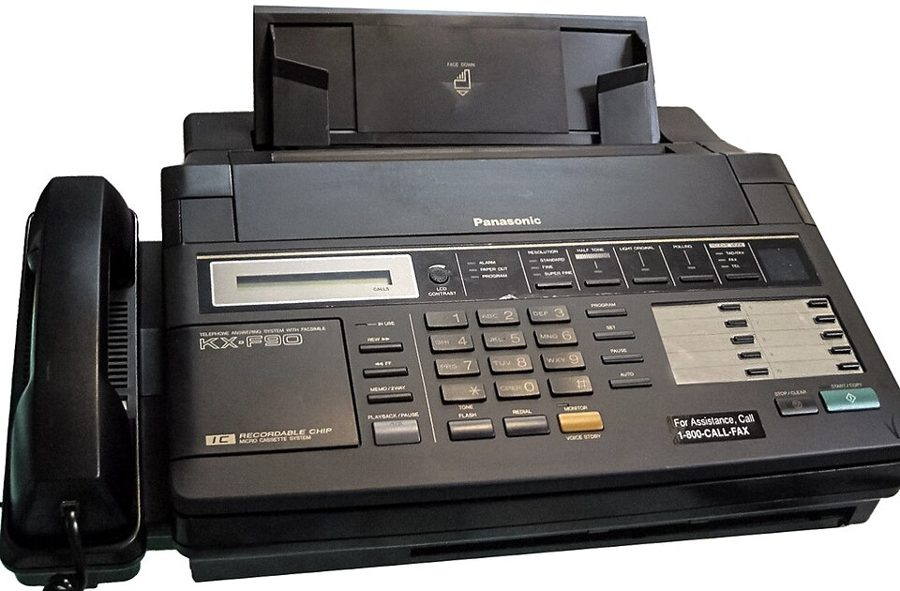
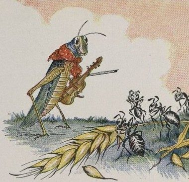
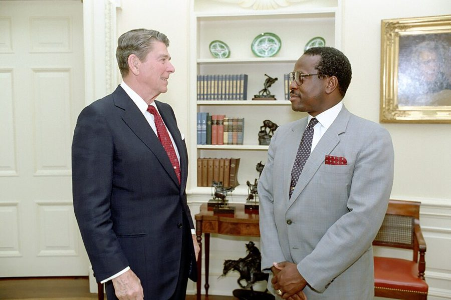

这一页在做什么
六十四五岁，在胡佛研究所。接上一页：Thomas 已进最高法院，儿子毕业那篇专栏引来的家长来信越来越多。这一页十封信、一篇整篇附上的专栏、一张别人写的便条：和 Thomas 开玩笑，替晚说话的孩子找科学家，给纽约的晚辈写家信，回敬前市长 Koch，向 Forbes 告别。
读的时候留意他拿经济学的话开了几次玩笑。
1995.1 1995.7 1996.1 1996.7
晚说话的孩子：通信小组
Forbes 专栏
想写才写
Peter Lutz Clarence Walter Pinker Rachel Koch Michaels Ruthellen
本站示意图。一个圆点是一封信，按信上的日期画。空心的那个不是他写的，是 Forbes 的主编 Michaels 发给编辑部的便条。1 月 1 日那封传真后面附着整篇专栏。上一页的最后一封信是 1993 年 6 月，中间一年半书里没有信。

1990 年代初的一种传真机，带电话和录音应答。不是他用的那台，只是给个样子：这一页的第一封信是传真，给 Pinker 的信里还提到办公室的录音电话。Pittigrilli，Georgfotoart 裁剪，CC BY-SA 4.0，维基共享资源 这一页的串场文字比前几页短，多是一两句交代收信人。长的只有两处：给 Walter 的信前面讲一桩寄养官司的那一段，和 10 月给 Clarence 的信后面讲宪法的两段。
收信人和提到的人
这一页有八位收信人，都是他写过去的。最后那张便条是 Forbes 的主编写给自己编辑部的，不是写给他的。晚辈和私人朋友照书里的叫法。
Peter Lutz 传真的收信人 · 书里没有介绍 名字只出现在传真的信头里，信头是图片。这人转来一个请求：有人想把他的一篇专栏译成德文重登。他同意了，书把那篇专栏整篇附在后面。
Clarence Clarence Thomas · 最高法院大法官 两封都是玩笑信。1 月那封的称呼是 Dear Fellow Sufferer：两人都是达拉斯牛仔队的球迷，球队刚输。10 月那封拿报纸对 Thomas 的评价开玩笑。
Walter Walter Williams · 经济学家，老朋友 Walter 替 Rush Limbaugh 代班主持电台节目时，两人在节目里谈了一桩寄养官司。信是报告结果，顺带说晚说话孩子的小组越来越大。
Professor Pinker / Steve Steven Pinker · 当时在 M.I.T. 素不相识。他整理书架时翻到 Pinker 的一本书，发现对方研究语言，就写信请人家接手研究那批孩子。五个月后第二封，称呼已经改成 Steve。
Rachel 纽约 niece 的孩子 · 书里只有名 串场文字说这孩子熬过了重病，正要上大学。Rachel 来信说无以为报，他回信讲「还不了的人情」该怎么办。
Ed Edward Koch · 纽约市前市长 1980 年 Koch 当市长时写信约他吃饭，拖到 1995 年才见上。见面后 Koch 显然来过信，对他在平权法案和犯罪问题上的看法有异议；这是回信。
Jim James W. Michaels · Forbes 杂志主编 他给 Forbes 写专栏，这封信是请辞。最后那张便条也是 Jim 写的。别和信里的 Jimmy Johnson 混：那是牛仔队的前任教练。
Ruthellen niece · 书里只有名 串场文字只说是 my niece。一封短信，报告停掉专栏以后的近况。下一个十年里还有写给 Ruthellen 的信。
Mary 只被提到 · 妻子，律师 串场文字里问「刚才是 Clarence 吧」的那个人。这一页的 my wife 都是她，不是姐姐 Mary Frances。
Rush Limbaugh 只被提到 · 电台主持人 保守派谈话节目主持人，串场文字说听众数以百万计。上一页末尾他刚和 Limbaugh 吃过饭。
Margaret Thatcher 只被提到 · 英国前首相 10 月的信里说，她到胡佛研究所参加午餐会，顺口说自己不看报。他拿这个和 Thomas 相比。
称呼在变。 Dear Fellow Sufferer 和 Dear Clarence 是同一个人。Dear Professor Pinker 和 Dear Steve 也是同一个人，中间隔了五个月和 Pinker 的一封回信。Dear Walter 后面是冒号，但这是一封朋友间的信；他这时的信，称呼后面冒号和逗号混着用，不必据此判断亲疏。
没有名字的人。 给 Walter 的信里那个黑人男孩、男孩的律师、福利机构的负责人，书里都没给名字。同一封信里的 my college room mate 也没说是哪一位，本站不猜。专栏里的 George 和 Lefty 是两只蚂蚁。
信件地图
一条是一封信。斜体字是那封信正文开头的几个词，照这一版屏幕上的字抄的，在 Kindle 里搜它就能跳过去。编号是黄底的，是别人写的；这一页有一条，是 Forbes 主编写给编辑部的便条。「留意」只给方向，答案在信里。
Thank you for passing along the 1995 年 1 月 1 日 · 传真给 Peter Lutz 留意：全信只有一句。信头是图片，搜不到；谁要转载、译成什么文字，在前一句串场里。Just as the 没写日期 · 附在传真后面的专栏，整篇 留意：两只蚂蚁各用哪一路词说话；最后四个词把童话的收尾改成了什么。During the Dallas-San Francisco game, I 1995 年 1 月 16 日 · 写给 Clarence Thomas 留意：那句「引错的名言」要念出声；第二段的抱怨是真抱怨吗。The black youngster we talked about 1995 年 1 月 19 日 · 写给 Walter Williams 留意：机构负责人那句话，他为什么认为是没听懂；第二段换了话题。In what I hope will prove 1995 年 4 月 27 日 · 写给 Professor Pinker 留意：给陌生人的求助信怎么起头；问卷里哪个发现最让他吃惊，为什么偏偏是他。I wish I knew what things 1995 年 5 月 22 日 · 写给 Rachel 留意：他劝一个年轻人靠什么熬过去；「还不了」的账，他说该还给谁。It was good finding your letter 1995 年 9 月 9 日 · 写给 Steve（Pinker） 留意：Pinker 的假说，他用哪句经济学的老话翻译了一遍；最后一句在说谁的年纪。It was a pleasure to finally 1995 年 9 月 27 日 · 写给 Ed Koch 留意：头一句还在寒暄，第二段就抠对方的一个词。看他怎么把这个词还回去。You seem to be getting a 1995 年 10 月 9 日 · 写给 Clarence Thomas 留意：最后一句的三顶帽子各从哪来。信后两段串场是当真讲道理，口气不同。As I begin planning what I 1995 年 12 月 27 日 · 写给 Jim Michaels 留意：请辞的理由有几层；他说什么比专栏更要紧，用了多重的词。I am much more relaxed now 1996 年 4 月 1 日 · 写给 Ruthellen 留意：读者的反应他引了谁的话来说；最后三句是在挖苦谁。Under no circumstances are changes to 1996 年 6 月 4 日 · Jim Michaels 写给 Forbes 的编辑和校对 留意：这不是写给他的。四句话，口气一句比一句重；信头是图片。
背景：作者默认你知道的事
蚂蚁和蚱蜢

Milo Winter 为一本儿童版《伊索寓言》画的《蚂蚁和蚱蜢》，1919 年出版。Milo Winter，公有领域，维基共享资源 伊索寓言里的一则，美国孩子都听过：夏天蚂蚁存粮，蚱蜢玩乐；冬天蚱蜢挨饿，来讨吃的，被蚂蚁数落一顿。寓意是趁好日子干活。他的专栏说自己写的是这则寓言的续集，开头照搬，从第二只蚂蚁出场起才是他的。
老寓言
信里附的续篇
夏天：蚂蚁存粮， 蚱蜢又唱又跳
开头一样
冬天：蚱蜢饿了， 来找蚂蚁讨吃的
多了第二只蚂蚁 Lefty， 刚在大学听过一门课
蚂蚁不给。 寓意：趁夏天干活
争的是该不该要蚱蜢改。 结局在最后四个词里
本站示意图。右边一栏只说续篇改了哪里，没有写结局。两只蚂蚁一只叫 George，一只叫 Lefty，名字本身就是提示，见词条。
1995 年 1 月的那场球
信里的 game 是美式橄榄球。1995 年 1 月 15 日，国家联合会（NFC）的冠军赛，旧金山 49 人队 38 比 28 赢了达拉斯牛仔队，赢的一方进超级碗。牛仔队此前连拿两届超级碗，教练是 Jimmy Johnson；1994 年春天 Johnson 和老板闹翻离队，换成 Barry Switzer。这场比赛里 Switzer 因为撞了裁判被罚 15 码。信写在比赛第二天。
「最年轻、最残忍的大法官」

Clarence Thomas（右）还在平等就业机会委员会任上时，和里根在椭圆形办公室。Odyssey 伴读用过这张照片。White House Photographic Office，公有领域，维基共享资源 1992 年 2 月，最高法院判 Hudson v. McMillian 案：狱警殴打一名戴着手铐的犯人，七位大法官认为这违反宪法第八修正案；Thomas 写了异议，Scalia 附议。随后《纽约时报》的社论题为 The Youngest, Cruelest Justice。当时 Thomas 四十三岁，上任才四个月。10 月那封信的最后一句和后面两段串场，说的都是这件事。
狱警打了戴手铐的犯人
问题一：这违法吗
问题二：这违宪吗
异议意见书：违法。 犯人可以依别的法律起诉
多数（七人）：违宪
Thomas、Scalia：不违宪。 打人不是法院判的「刑罚」
他的说法：报上只拿问题二的答案做了标题
本站示意图，照串场文字的讲法画的。第八修正案禁止的是 cruel and unusual punishment（残忍且异常的刑罚）。异议意见书本身的论证比这细，主要落在伤势轻重上；这里只画他 2007 年怎么向读者解释。
跨种族寄养
Walter Williams，2013 年在得克萨斯理工大学演讲。1995 年他替 Limbaugh 代班主持时，是乔治梅森大学的经济学教授。Free Market Institute at Texas Tech University，CC BY 3.0，维基共享资源 寄养（foster care）是政府把无人照管的孩子交给一户人家代养，监护权仍在福利机构手里，所以搬到外州要机构批准。1972 年，全国黑人社工协会发表声明，反对把黑人孩子交给白人家庭收养，理由是孩子会失去文化上的认同；此后二十多年，许多机构按种族配对。1994 年国会立法，禁止仅因种族拖延或拒绝安置。信里那桩官司就发生在这个当口。
晚说话的孩子，和 Pinker
Steven Pinker，2005 年。Steven Pinker，CC BY-SA 3.0，维基共享资源
Ed Koch，市长任内。下一块背景讲他。Bernard Gotfryd，公有领域，维基共享资源
事情的前半段 Odyssey 讲过。Pinker 当时是 M.I.T. 脑与认知科学系的教授，研究儿童怎样学会语言，1994 年出了畅销书 The Language Instinct 。串场文字称他 neuroscientist，按专业说他是心理学家。1995 到 1996 学年 Pinker 在加州大学 Santa Barbara 分校访问，所以第二封信说见面方便了。这批材料后来写成两本书：Late-Talking Children （1997）和 The Einstein Syndrome （2001）。
1993 1994 1995 1996 1997
1993 年 5 月 写儿子的专栏
1993 年 9 月 查不到文献， 把家长连成小组
1994 年 4 月 发问卷
1995 年 1 月 小组 36 家
1995 年 4 月 写信给 Pinker，四十多家
1997 年夏 出书，Camarata 接手
本站示意图。1993、1994 年的月份取自回忆录，1995 年的两个数字取自这一页的两封信，1997 年的事两本书都讲了，信在下一页。
Koch，和那本「受膏者」
Ed Koch 是民主党人，1978 到 1989 年当了三届纽约市长，以心直口快出名。信里的 my recent book 是 1995 年出的 The Vision of the Anointed ，其中一章专讲词汇。他用 the anointed（受膏者，蒙神拣选的人）称呼那些自认比常人高明、要替社会做主的知识人和决策者，是挖苦的叫法。root causes 是当时关于犯罪的常用说法：犯罪的「根源」在贫困和歧视，治本要靠社会项目。
Odyssey 里讲过这一段
回忆录对 1981 年以后写得很省，这两年只有第 11 章最后一节讲的那一件事。其余的信，回忆录里找不到对应。
晚说话的孩子 Odyssey 第 11 章（下）最后一节 回忆录按顺序讲了专栏、小组、问卷、工程师亲属，到 1995 年只有一句：找了一年专家，没人感兴趣，只好自己来。信里多出来的是那一年里的一个例外：Pinker 的名字、找到他的偶然、「大脑里争资源」的猜想，还有 Walter 和一位大学室友也说话晚。
去那一页 → 还不了的人情 Odyssey 第 11 章（下）· 第 12 章 给 Rachel 的信里那段话，回忆录里有它的来历：1991 年他请当年借钱给他吃饭的车间领班 Ed Gally 一家吃饭，接着说许多帮过他的人没等到他回报就去世了。第 12 章还提到一位纽约的 niece，是不是 Rachel 的母亲，两本书都没说。
去那一页 → 和 Clarence Thomas 的交情 Odyssey 第 11 章（下） 回忆录只在一句话里称 Thomas 为朋友，而且是为了说明自己照样公开批评过 Thomas 主持的机构。两人平时怎么说话，回忆录没写；这里是两封玩笑信，和电话里笑个不停的那段串场。
去那一页 → Forbes、Koch、蚂蚁和蚱蜢 回忆录没写 回忆录没提 Forbes 的专栏，也就没有请辞和那张便条；没有 Koch；没有这篇寓言。他在请辞信里说的那部写了十几年的大稿子，回忆录也没有交代。
这一版的错字
只收会让人读不懂、或者在 Kindle 里搜不到的。第一格是屏幕上的字，照抄的；第二格是本站有把握的原字。问号前多出来的撇号全书都有，见「开读之前」，这里不列。
屏幕上的字 应为 在哪 lie wants me to give He wants me to give 专栏里，George 向 Lefty 告状的那句。He 认成了 lie a 15yard penalty a 15-yard penalty 1 月给 Clarence 的信。连字符丢了 only parents lie knew only parents he knew 给 Walter 的信前面的串场。又是 he 认成 lie should not he raised should not be raised 同一段靠后。be 认成了 he In May 1993 1 wrote In May 1993 I wrote 给 Professor Pinker 的信第二段。大写的 I 认成了数字 1 with one anotherincluding with one another—including 同一封信第三段。破折号丢了，两个词粘在一起 would have to he the one would have to be the one 这封信后面的串场，最后一句 a 65-yearold man a 65-year-old man 9 月给 Steve 的信，最后一句 possibility liar explaining possibility for explaining 这封信后面讲爱因斯坦大脑的串场。for 认成了 liar people with high lQs people with high IQs 同一句的末尾。大写的 I 认成了小写的 l，搜 IQ 搜不到 the rest of my life it is the rest of my life—it is 给 Jim 的请辞信第一句。破折号丢了，插入语合不上
两处信头是图片，一条脚注没印出号码。 1 月 1 日那封传真，日期下面的三行信头是图片：收件人 Peter Lutz，发件人是他自己，事由是准许转载那篇专栏。1996 年 6 月的便条，日期上下各有一张图：收件人是 Forbes 的一位编辑、稿件编辑台和校对，事由一栏写的是他的名字。给 Koch 的信里 my recent book 后面原书有一条脚注，这一版连那个多出来的撇号都没留下；脚注只有书名，就是下一段点名的那本。另外，10 月给 Clarence 的信后面第二段串场里，一对破折号一个印成了 media-- -including ，另一个丢了，known better 和 tried 之间要补一个。
词与短语
按信的顺序排，串场文字里的词条归到它后面那封信的组里。斜体小字是那句话里的几个词，照这一版屏幕上的字抄的（撇号是直的），在 Kindle 里搜它就能跳到那一句。单个的生词长按就能查，这里收的主要是词典帮不上忙的。
1995 年 1 月 · 传真和附上的专栏
pass along
… Thank you for passing along the request …
转交
请求不是 Lutz 本人提的，是经这人转来的。
permission to reprint
… the request for permission to reprint …
转载许可
出版圈的行话。专栏的版权在作者或辛迪加手里，别的报刊重登要先拿到书面许可。
so should
… had their sequels, so should the old …
……也该有
倒装。电影有续集（sequel），老寓言也该有。整篇的玩笑从这句立起来。
break one’s back
… I've been breaking my back all summer …
累死累活
不是真折了背。
clod
… one of those old-fashioned clods who had …
土包子，木头人
本义是土块。这是蚱蜢夏天骂蚂蚁的话。
self-realization
… point of the modern self-realization philosophy …
自我实现
六七十年代起流行的说法：人生的要紧事是成为你自己。他借蚱蜢的嘴说出来，是挖苦。
hold something against someone
… going to hold that against me at …
为这事记恨某人
against 不是「靠着」。
have a long memory
… but I do have a long memory …
我可记性好
前半句说不记仇，后半句等于说记着呢。
Lefty
… Lefty,” the first ant said. …
「左撇子」，也是「左派」
美国常见的绰号，给左撇子起的。这里是双关：这只蚂蚁说的全是左派的话。另一只叫 George，再普通不过的名字。
disparate shares in the bounty of nature
… disparate shares in the bounty of nature, …
大自然的恩赐分得不均
故意写成学院腔。disparate、inequity 都是论文里的词。粮食在这句话里成了「大自然给的」，没有人搬过它。
my foot
… Nature's bounty, my foot,” George said. …
……个鬼
重复对方的话再加 my foot，表示根本不信。有点老派的口语。
bum
… Why couldn't this lazy bum gather his …
懒汉，流浪汉
贬义词。下一句 Lefty 纠正：现在要说 the homeless（无家可归者）。两个词的差别就是这篇专栏的题目。
That’s what the forecasters told Noah
… That's what the forecasters told Noah …
预报员当年也是这么跟挪亚说的
蚱蜢说天气预报是「晴，转暖」。挪亚遇上的是下了四十昼夜的大洪水。
Sometimes that’s worse
… Sometimes that's worse, these days …
这年头，有时候那更糟
that 指「受了教育」。对方说我没疯，我是受了教育；这句是回答。要反着听。
a trail of cookie crumbs
… followed a trail of cookie crumbs left …
一路撒下的饼干屑
蚂蚁就是这么进的大学。也借了童话里撒面包屑认路的桥段。
Ivy University
… a classroom at Ivy University …
「常春藤大学」
编的校名，影射 Ivy League（哈佛、耶鲁那八所名校）。
big words
… all these big words and dumb ideas …
大词儿
不是字写得大，是难懂的、唬人的词。和 dumb ideas 配成一对。
I disdain to answer that
… I disdain to answer that,” Lefty said. …
这话我不屑回答
端着架子的说法。平常人说 I won’t dignify that with an answer 已经够文了。
Professor Murky
… was Professor Murky's course on Social …
「浑水教授」
murky 是浑浊、说不清。名字就是评语。课名 Social Justice（社会正义）是他多年的靶子。
in public service
… I'm in public service,” Lefty said loftily. …
我从事公共服务
George 问的是「你给政府干活了？」，Lefty 换了个体面的说法。同一句里加了引号的 make a difference（有所作为）是毕业典礼上的套话。
cultural imperialism
… That would be cultural imperialism …
文化帝国主义
学界批评强势文化把自己的标准加给别人时用的词。这里拿来回答「为什么不教蚱蜢干活」。
as word spread
… As word spread, grasshoppers came from …
消息传开以后
word 不带冠词，是消息、风声。
pass from the scene
… of ants passed from the scene, more …
退场，去世
委婉的说法：老一辈不在了。
lived happily ever after
… lived happily ever after-all summer long. Then …
从此过着幸福的生活
童话的标准结尾。短横是破折号：他在后面接了半句，把「从此」改成了一个期限。再往后还有四个词。
1995 年 1 月 · 给 Clarence
at the hands of
… defeat at the hands of the Forty-Niners. …
败在……手下
后面跟的是让你吃苦头的一方。Forty-Niners 是旧金山 49 人队，名字来自 1849 年的淘金客。
I don’t like this atoll
… I don't like this atoll.” The Cowboys …
「我一点也不喜欢这个环礁」
要念出声：this atoll 听起来就是 this at all。atoll 是环状的珊瑚岛，所以安到流落荒岛的鲁滨逊头上。他自己说了是 misquote，书里没有这句。称呼 Dear Fellow Sufferer 是「同病相怜的人」。
official
… penalty for bumping an official …
裁判
体育里的 official 是场上的执法人员，不是官员。
recluse
… you are a recluse but, every time …
不见人的隐士
报纸对 Thomas 的说法。后半句拆台：一开电视就看见你在别处演讲。
government competing with private enterprise
… of government competing with private enterprise. …
政府与民争利
玩笑。大法官是政府的人，他自己是「私营」的黑人保守派演讲人，市场就这么大。自由市场派平时拿这句话骂政府。
the lecture circuit
… going on the lecture circuit, so he …
巡回演讲的圈子
circuit 是一圈固定的场子。名人靠到处演讲挣钱，叫 go on the lecture circuit。
cut into my market
… was cutting into my market. As …
抢我的生意
cut into 是侵蚀掉一块。串场文字在解释上面那个玩笑为什么对方不会当真。
upbeat
… the most upbeat people around, with …
乐呵呵的，凡事往好处看
和媒体写的 withdrawn and embittered（孤僻、满腹怨气）正相反。
1995 年 1 月 · 给 Walter
foster parents
… by white foster parents, who were …
寄养父母
代政府养孩子的人家，不是收养（adopt）。见背景。
guest-host
… was a guest-host on the Rush Limbaugh …
代班主持人
主持人休假时请来顶班的人。
give short shrift
… social service agency short shrift. I …
三言两语打发掉
shrift 是临刑前的忏悔，short shrift 原指只给犯人一点点时间。现在的意思是不屑多理。法官没让那家机构多说。
commissioner sitting as judge
… the commissioner sitting as judge gave …
代行法官职权的司法专员
加州法院的行话。commissioner 是法院聘的司法官员，家事、少年案件常由他们审。sit 是开庭。
honcho
… But the honcho in charge of …
头头
口语，来自日语的「班長」，美军从日本带回去的词。带点不敬。
doesn’t get it
… apparently still doesn't get it. He …
还是没明白
get it 是领会。那位负责人的话，意思是孩子本来就不该进那个家；而孩子在那个家里过得很好。
at last count
… At last count, there were 36 …
照最近一次数的
言下之意：数字还在涨。
talk late
… mate had also talked late. That …
开口说话晚
不是聊到很晚。late-talking children 是到了年龄还不开口的孩子，这是这几年信里的关键词。
1995 年 4 月 · 给 Professor Pinker
the first break
… The first break in my attempt …
第一个转机
break 是运气上的突破，不是中断。
Providential
… to be a Providential event, I …
天意安排的
Providence 大写是上帝的眷顾。给陌生人的信用这个词起头，半是恭维半是自嘲：我是碰巧翻到您的书。
advertising copy
… from the advertising copy that you …
（封皮上的）宣传文字
copy 在出版和广告行里是「文案、稿子」，不是副本。这一页后面的 copy-editors、copy submitted 都是这个意思。他老实交代：书还没读，只看了封皮。
come up empty
… I had come up empty and suggesting …
一无所获
像撒网捞上来是空的。
to make a long story short
… To make a long story short, I …
长话短说
nuclear family
… engineer in their nuclear family or among …
核心家庭
父母加子女。和核能无关。后面列的祖父母、叔伯姑姨是它以外的近亲。
be put off by
… do not be put off by the …
被……吓退
不是「推迟」。
forbidding message
… by the forbidding message that my assistant …
拒人千里的留言
录音电话上的应答语，助手录的。他怕对方听了就不肯留言。
canvass
… research assistants canvass the scientific literature …
彻底搜一遍
和帆布 canvas 差一个 s。本义是挨家挨户拉票。
on point
… find nothing directly on point either. …
正好对得上这个问题的
法律行话：一个判例和眼前的案子问题相同，叫 a case on point。他妻子是律师。
by default
… realize that, by default, I would …
因为没有别人，只好
程序员熟悉的「默认」是从这里来的：对手缺席，不战而得。这里得到的是一件苦差事。
1995 年 5 月 · 给 Rachel
come through
… had come through serious medical problems …
熬过来了
从难关里穿过来，人还在。
pass it on
… remember that and pass it on to …
把它传给下一个人
it 是受过的恩。不是还给原主，是往下传。
after I am gone
… my children after I am gone. …
我不在了以后
gone 是去世的委婉说法。接下来几句他设想自己老病无依，是对晚辈少见的直白。
1995 年 9 月 · 给 Steve
competition for resources
… result of competition for resources in the …
争夺资源
Pinker 的猜想：大脑里一块地方用得多了，别的功能可能就得让一让。措辞正好是经济学的。
buttress
… a professional's buttress to my layman's …
撑腰的东西
建筑上的扶壁。layman 是外行，他自称。
there is no free lunch
… there is no free lunch in the …
天下没有免费的午餐
经济学家的口头禅：得到一样就要放弃一样。Milton Friedman 用它做过书名。他说要是只有自己这么讲，别人会当成职业病。
last
… that lasts much longer than a …
持续；撑得住
一句里用了两次：研究要持续很多年，可能比一个六十五岁的人活得还长。说的是他自己。
spill over into
… was enlarged and spilled over into the …
漫进了（旁边的区域）
这一段是 2007 年的串场，讲爱因斯坦大脑的解剖研究。结论他留给了科学家。
1995 年 9 月 · 给 Ed
dismissal
… that is not a dismissal. That …
不当回事地一口否定
dismiss 这里不是解雇，是「想都不想就打发掉」。Koch 说他 dismiss 了平权法案；他回答：研究了二十多年得出的不同结论，不叫 dismiss。
behind bars
… putting criminals behind bars and keeping …
关进牢里
bars 是铁栅栏。
murder capital
… was the murder capital of the nation, …
全国凶杀率最高的地方
某某 capital 是「某某之都」的戏称，不是首都。East Palo Alto 紧挨着斯坦福所在的 Palo Alto，1992 年人均凶杀率全美最高。
root causes
… found those elusive “root causes” of crime. …
「根源」
见背景。elusive 是总也抓不住的。整句是反话：没人会以为这个小城一年之内找到并消除了犯罪的根源。
the Anointed
… in The Vision of the Anointed, the …
「受膏者」，自命天选的人
anoint 是抹圣油，立君王和祭司的仪式。他拿来称呼自认高人一等的精英，见背景。
1995 年 10 月 · 给 Clarence
good press
… a lot of good press lately, perhaps …
媒体上的好评
press 是报界。get good press、bad press 是固定说法。
get around to
… others have actually gotten around to reading …
终于抽出空来做
挖苦：骂了几年，现在才有人去读你写的东西。
opinions
… reading some of your opinions. Incidentally, …
判决意见书
法官写的 opinion 是正式的法律文书，不是随口的看法。下面的 dissenting opinion 是异议意见书。
in passing
… mentioned in passing that she doesn't …
顺口，捎带着
facetious
… The facetious remark at the end …
开玩笑的，故意不正经的
串场文字自己点明：信末那句不是当真的。
dissenting opinion
… of his dissenting opinion in a case …
异议意见书
少数派大法官写的不同意见，没有法律效力，但留在案卷里。
cruel and unusual punishment
… ban on “cruel and unusual punishment” was …
残忍且异常的刑罚
第八修正案的原话。报纸标题里的 cruelest 是拿这个词做的文章。
have custody of
… than the F.B.I., had custody of Lee …
羁押
custody 说孩子是监护权，说犯人是羁押。他举的例子：1963 年刺杀总统还不是联邦罪名，所以人在达拉斯警察手里。
go out of one’s way
… going out of his way to point …
特意，不嫌麻烦地
绕了路去做一件本可以不做的事。
should have known better
… people who should have known better tried …
本该懂得这个道理的人
责备的话：不是不懂，是不该犯这种错。指懂法律的记者和评论者。known better 后面缺一个破折号。
1995 年 12 月 · 给 Jim
a sober decision
… I made a sober decision about the …
冷静想过的决定
sober 这里是清醒、郑重，和喝没喝酒无关。
stretched very thin
… that I am stretched very thin and …
摊子铺得太开，顾不过来
像一块面擀得太薄。
leave while the audience wants more
… to leave while the audience wants more …
趁观众还没看够就下台
演艺圈的老话 Always leave them wanting more。请辞信里用它，是给双方台阶。
parodies of their former selves
… become parodies of their former selves. …
当年的自己的拙劣翻版
parody 是滑稽的模仿。说过气还不肯退的运动员和艺人。
Balkanization
… when the Balkanization and polarization of …
巴尔干化
一个国家裂成互相敌视的小块。写这封信的两周前，波黑战争的和约刚签字。他用来说美国按族群分裂的危险。
reciprocate the hospitality
… we can reciprocate the hospitality you showed …
回请，还这份款待
书信套话。上文的 out this way 是「我们西海岸这边」。
1996 年 · 给 Ruthellen，和 Jim 的便条
one thing too many
… was just one thing too many. All …
多出来的那一件
数量加 too many：多了这么多。不是专栏不好，是事情多了一件。
keep off my back
… had largely kept off my back before. …
拦着不让来烦我
on someone’s back 是骑在背上唠叨。被拦着的是 copy-editors。
copy-editors
… to cope with copy-editors that Jim …
文字编辑
报刊里逐字改稿的人：改拼写、标点，也按本刊的规矩改措辞。作者和他们的摩擦是出版圈的老话题。
under no circumstances
… Under no circumstances are changes to …
无论如何不得
否定词放句首，后面倒装。下命令的句式。
style book
… never mind our style book. As he …
本刊的体例手册
不是讲文采的书。每家报刊有自己的规定：数字怎么写、哪里用连字符。主编说：别管它。
so shall it be
… he writes it so shall it be printed. …
就照那样
仿古的句式，像君王下诏。便条写得这么重，是说给不听话的人听的。
music to my ears
… It was music to my ears. …
听着真舒坦
听到的是有位文字编辑在聚会上骂他。越骂，说明便条越管用。
值得停下来的句子
All of us owe much to people we can never repay. The best we can do is to remember that and pass it on …— 1995 年 5 月 22 日给 Rachel 的信。本站译：我们都欠着一些永远还不了的人。能做的只是记住这一点，再把它传下去……
两句都很短。第一句的 owe much to people 后面跟着定语 we can never repay ，省了 whom。第二句的 that 指前一整句，it 指受过的恩。
停在这里，是因为这不是空话。读过回忆录的人知道他说的是谁：借钱给他吃饭的领班，把他带大却没等到他回报的养父。信的下文更出人意料：他说将来要还的人，也许就是老了、病了的他自己。
In this context, the word “dismiss” is itself a way of dismissing all this.— 1995 年 9 月 27 日给 Ed Koch 的信。本站译：在这个语境里，「一口否定」这个词本身，就是把这一切一口否定掉的办法。
同一个词在一句里用了两次，第二次落在对方身上。all this 指前面列的三样：研究了二十多年、跑到别的国家去看、写成一批文章和书。
这是他常用的打法：不先争结论，先看对方用的那个词干了什么活。他认为 dismiss 这个词让人不必回应证据。Koch 的原信书里没印，Koch 是不是这个意思，只能从这封回信里看到一面。
检查一下理解
先在心里答，再点开。答错的那题，回书里把那封信再读一遍。
1. 专栏里说话满口大词的那只蚂蚁，作者是在借它说自己的看法吗？ 不是。那只蚂蚁叫 Lefty，名字就是「左派」的双关，它的话是作者要挖苦的对象。作者的看法更接近 George。不过文章里辩论是 Lefty 赢了，作者的意见放在结局里。
2. 他对 Clarence Thomas 说「这是政府与民争利的又一个例子」，是真在抱怨吗？ 不是。这是朋友间的玩笑：大法官到处演讲，抢了他这个民间演讲人的生意。串场文字说明了，Thomas 知道他本来就不爱出去演讲，不会当真。
3. 给 Walter 的信里，那位机构负责人说「孩子要是一开始就归我们管，这一切都不会发生」。他为什么说这人还是没明白？ 负责人的意思是：那样的话，孩子根本不会被放进那户白人家庭。而信里说孩子正是在那个家里长得很好。在他看来，这句话等于承认规矩比孩子的处境要紧。
4. 第一封给 Pinker 的信，是请 Pinker 帮忙解答问题吗？后来怎样？ 他要的更多：请一位有科学背景的人把整个研究接过去。串场文字说 Pinker 没有接手，但和他讨论、指了文献，还让自己的助手也查了一遍，同样没查到。于是他明白这本书得自己写。
5. 「最年轻、最残忍」那句，是他对 Thomas 的评价吗？串场文字是不是在说打犯人没什么不对？ 都不是。那是报纸给 Thomas 扣的帽子，他拿来开玩笑。串场文字的意思是：打人是违法的，犯人可以依别的法律起诉；异议只是说，这件事不归宪法里禁止残忍刑罚的那一条管。
6. 最后那张「一个逗号都不许改」的便条，是他写给 Forbes 的吗？ 不是。是主编 Jim Michaels 写给自己的编辑和校对的，落款是 Jim Michaels。起因是他停了固定专栏、改成偶尔投稿以后，稿子落到文字编辑手里，他向主编抱怨过。